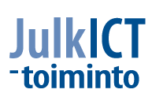

Julkisen tiedon avaamiseen on monta syytä. On paljon hyvää näyttöä siitä, miten merkittäviä tuloksia on muutamassa vuodessa saatu aikaan pelkästään dataa avaamalla. Avoimen datan liike on nuori ja kansainvälinen, mutta nopeasti etenevä ja uusiin saavutuksiin innostava. Avoin data kehittää yhteiskuntaa kaikilla tasoilla avoimemmaksi ja kansainvälisemmäksi, tasa-arvoisemmaksi ja osallistuvammaksi.
Julkisen tiedon avaaminen, mikä merkitsee myös maksuttomuutta, on julkisen talouden näkökulmasta mielekästä. Pelkällä tiedon avaamisella saadaan liikkeelle sekä ällistyttävän paljon uutta osaamista että käyttäjälähtöisyyttä. Näin syntyy uusia palveluja ja tuotteita, tuotantokustannuksia säästäen. Toisin sanoen, avoimella datalla helpotetaan ihmisten arkea, synnytetään kuluttajalle lisää vaihtoehtoja, myötävaikutetaan uusien työpaikkojen syntymiseen, mahdollistetaan ja innostetaan rajattomaan yhteistyöhön. Helsinki, Espoo, Vantaa ja Kauniainen kehittyvät suuresti avoimina kaupunkeina.
Asta Manninen
johtaja, Helsinki Region Infoshare -hanke
Helsingin kaupungin tietokeskus

Julkisen datan avaaminen on toimi, jolla on valtavasti myönteisiä vaikutuksia. Aktiivisten hakkerien ja yritysten käsissä julkinen tieto jalostuu uusiksi palveluiksi ja uudeksi liiketoiminnaksi.
Tavalliselle kansalaiselle uusia tietovarantoja hyödyntävät palvelut merkitsevät sujuvampaa arkea ja asiointia, yrityksille uusia liiketoimintamahdollisuuksia ja julkishallinnolle lisää verotuloja. Vaikea kuvitella toista asiaa, jolla on niin paljon pelkkiä positiivisia vaikutuksia.
Merkittävä jarru tiedon avaamiselle on ollut valtion virastojen huoli maksutulojen menetyksestä. Sekin on nyt hoidettu kuntoon. Hallituksen kehysriihessä avoimen tiedon ohjelma sai paitsi varauksettoman poliittisen tuen, myös merkittävän rahoituksen vuosille 2014-2017. Tällä voidaan kompensoida valtion virastoille tiedosta perittyjen maksutulojen menetystä, kun datavarantoja avataan ilmaiseksi kaikkien käyttöön.
Timo Valli
julkisen hallinnon ICT-johtaja
Valtiovarainministeriö
Valtiovarainministeriön JulkICT-toiminto vastaa julkisen hallinnon tietohallinnon, sähköisen asioinnin ja tietovarantojen käytön yleisestä kehittämisestä, valtionhallinnon tietohallinnon ohjauksesta ja yhteisten kehittämishankkeiden yhteensovittamisesta. JulkICT-toiminto edistää valtion ja kuntien välistä tietohallintoyhteistyötä, kehittää yhteisiä toiminnallisia ja teknisiä ratkaisuja ja menetelmiä sekä vastaa julkisen hallinnon tietoturvallisuuden yleisestä kehittämisestä ja valtionhallinnon tietoturvallisuuden ohjauksesta.
Helsinki Region Infoshare -hanke avaa Helsingin seutua koskevaa maksutonta ja avointa tietoa kaikkien saataville. Julkisen tiedon avaaminen lisää kansalaisten tietoa ja ymmärrystä asuinseutunsa kehityksestä ja parantaa siten kansalaisaktiivisuuden edellytyksiä. Avoin tiedon saatavuus voi myös synnyttää seudulle uusia palveluja ja liiketoimintaa sekä edistää tutkimusta ja kehitystoimintaa. HRI on Helsingin, Espoon, Vantaan ja Kauniaisten yhteinen datanavaushanke, jota ovat rahoittaneet myös Sitra ja Valtiovarainministeriö. Forum Virium Helsinki on toiminut hankkeen keskeisenä toteuttajana.
Toimittajat
Petja Partanen, Tarinatakomo
Terhi Upola
Kannen kuva
Lauri Vanhala
Ulkoasu ja taitto
Valeria Gasik, Frendo
Marko Tanninen, Frendo
Teoksen tekstit on lisensoitu HRI-nimeä -lisenssillä. Teoksen uudelleenkäytön yhteydessä pitää mainita sekä tekstin kirjoittaja (Petja Partanen tai Terhi Upola) että rahoittaja (Helsinki Region Infoshare -palvelu).